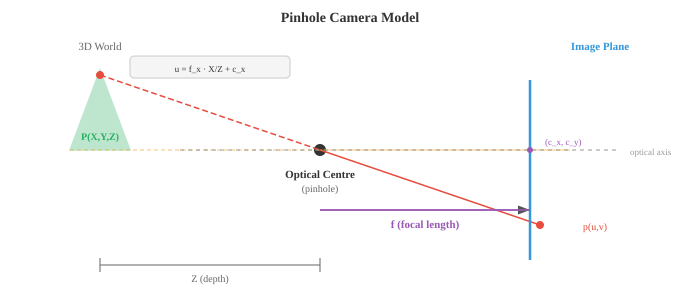
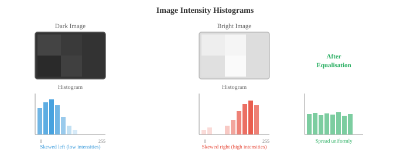
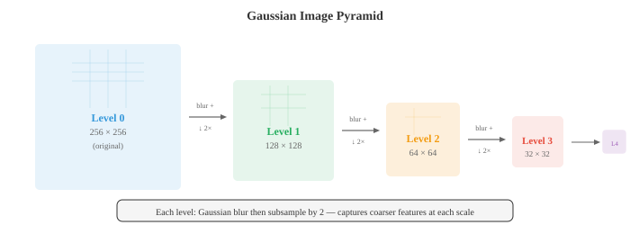

图像基础¶
一句话总结：数字图像本质是二维像素网格，从颜色空间、成像模型到滤波、边缘检测与特征描述子，构成模型看到图像之前的经典视觉工具箱。
🗺️ 本章导览¶
- 本章覆盖计算机视觉：图像基础 → 卷积网络 → 目标检测 → 视觉 Transformer → 视频与 3D
- 01. 图像基础 (本节)：像素、颜色空间、经典图像处理
- 02. 卷积网络: CNN 结构、经典模型 (LeNet/AlexNet/ResNet)
- 03. 目标检测与分割: R-CNN 家族、YOLO、Mask R-CNN、语义/实例分割
- 04. 视觉 Transformer 与生成: ViT、扩散模型、Flow Matching
- 05. 视频与 3D 视觉：光流、SLAM、NeRF、3D 表征
图像基础讲的是数字图像如何被表示、如何形成，以及在任何模型看到它之前会经过怎样的预处理。 本节涵盖像素、颜色空间 (RGB、HSV、YCbCr、LAB)、针孔相机模型、卷积、边缘检测 (Sobel、Canny)、直方图，以及特征描述子 (SIFT、ORB) —— 一整套底层视觉工具.
-
数字图像 (digital image) 就是一张由数字组成的二维网格。 网格中每一格叫像素 (pixel, picture element)，它的值代表亮度或颜色。 灰度图是一个单独的二维矩阵，每个像素存一个亮度值，8 位图像里通常从 0 (黑) 到 255 (白).
-
彩色图像把这个想法扩展到三通道。 在 RGB (Red-Green-Blue) 颜色空间里，每个像素存三个值：红、绿、蓝各自的强度。
-
于是彩色图像就是一个形状为 (height, width, 3) 的三维张量。 把这三个通道按不同强度混合，就能得到人眼可见的整个色谱。

-
位深 (bit depth) 决定每个通道能表达多少个不同的强度等级。
-
8 位图像每通道有 \(2^8 = 256\) 级，三通道组合出 \(256^3 \approx 16.7\) 百万种可能颜色。 16 位图像每通道 65,536 级，用于医学影像和 HDR 摄影这类对细微亮度差异要求高的场景。
-
RGB 显示起来方便，但换别的任务，其他颜色空间往往更合适。
-
HSV (Hue-Saturation-Value，色相-饱和度-明度) 把颜色信息和亮度分开。 色相是纯颜色 (在色轮上 0-360 度)，饱和度衡量颜色有多鲜艳 (0 = 灰色，1 = 纯色)，明度就是亮度。 HSV 适合做基于颜色的分割，因为你可以只对色相做阈值判断，不受光照条件影响。 想检测"红色物体"，在 HSV 里比在 RGB 里简单得多。
-
YCbCr 把亮度 (Y，人眼感知到的明暗) 和色度 (Cb, Cr，颜色差分信号) 分开。 这是 JPEG 压缩和视频编码器使用的颜色空间。 人眼对亮度比对颜色更敏感，所以色度可以用更低的分辨率存储 (色度子采样)，视觉上几乎看不出损失。
-
LAB (CIELAB) 的设计目标是：两种颜色间的数值距离要对应人眼感知到的差异。 在 LAB 空间里等步长看起来就是等步长。 L 通道是明度，A 从绿到红，B 从蓝到黄。 需要做感知上均匀的颜色比较时就用 LAB.
-
图像形成 (image formation) 描述三维场景如何变成一张二维图像。 最简单的模型是针孔相机 (pinhole camera)：场景的光线穿过一个小孔，投射到孔后面的传感器平面上。 世界坐标中的一个点 \((X, Y, Z)\) 投影到像素坐标 \((u, v)\):
- 这个 3x3 矩阵叫内参矩阵 (intrinsic matrix) \(K\). 它编码了相机的内部属性：焦距 \(f_x, f_y\) (镜头把光线会聚的强度) 和主点 \((c_x, c_y)\) (光轴与传感器的交点，一般在图像中心附近). 对同一台相机加同一支镜头，这些参数是固定的。

- 外参 (extrinsic parameters) 描述相机在世界里的位置：一个旋转矩阵 \(R\) (3x3，见第 02 章) 和一个平移向量 \(t\) (3x1). 二者一起把世界坐标变换到相机坐标。 完整的投影是:
-
其中 \(\mathbf{P} = [X, Y, Z, 1]^T\) 是三维点的齐次坐标，\(\mathbf{p} = [u, v, 1]^T\) 是投影后的像素。 \([R \mid t]\) 是把旋转与平移横向拼起来的 3x4 矩阵。 这全都是第 02 章的线性代数。
-
真实镜头会带来畸变 (distortion).
- 径向畸变 (radial distortion) 把直线变成曲线 (桶形畸变让图像向外鼓，枕形畸变把图像向内挤). 切向畸变 (tangential distortion) 出现在镜头与传感器不完全平行的时候。
-
相机标定 (camera calibration) 从一组已知图案 (比如棋盘格) 的图像中估计出内参和畸变系数，然后对图像做去畸变校正。
-
空间滤波 (spatial filtering) 是经典图像处理的地基。 滤波器 (filter，又叫核 kernel) 是一个小矩阵 (通常 3x3 或 5x5)，它在图像上滑动。 每滑到一个位置，就把滤波器里的数值与覆盖到的图像块逐元素相乘再求和，得到一个输出像素。 这就是二维卷积 (2D convolution)，也正是驱动 CNN (卷积神经网络，Convolutional Neural Network, CNN，见第 02 节) 的同一种操作 —— 只不过这里的滤波器权重是手工设计的，而不是学出来的。
-
这就是第 06 章一维卷积的二维推广。 用什么样的滤波器，就决定这个操作能检测出什么：不同的滤波器检测不同的特征。
-
模糊 (blurring) 通过平均邻近像素来平滑图像。 盒式滤波器 (box filter) 给所有邻居等权重。
-
高斯滤波器 (Gaussian filter) 按二维高斯 (第 05 章) 给邻居加权，离得近的权重大，离得远的权重小。 高斯模糊是最常用的平滑操作，用 \(\sigma\) 作为参数：\(\sigma\) 越大，平滑程度越强。
-
中值滤波 (median filtering) 把每个像素替换成邻域的中位数，而不是加权平均。 它特别擅长去除椒盐噪声 (salt-and-pepper noise，随机出现的黑白点)，同时能保住边缘，因为中位数对离群值稳健 (见第 04 章).
-
边缘检测 (edge detection) 找出像素强度剧烈变化的地方。 边缘承载了图像里大部分的结构信息；光看边缘，你就能认出物体。
-
Sobel 算子 (Sobel operator) 用两个 3x3 滤波器分别估计水平和垂直方向的梯度:
-
图像与 \(G_x\) 卷积得到水平梯度 (对竖直边缘响应强)，与 \(G_y\) 卷积得到垂直梯度 (对水平边缘响应强).
-
梯度幅值 \(\sqrt{G_x^2 + G_y^2}\) 和方向 \(\arctan(G_y / G_x)\) 一起，描述了每个像素处边缘的强度和朝向。 这就是第 03 章梯度概念在图像域的类比。

-
Canny 边缘检测器 (Canny edge detector) 是边缘检测的黄金标准。 它有四步:
- 用高斯滤波平滑图像，降低噪声
- 用 Sobel 计算梯度幅值与方向
- 非极大值抑制 (Non-Maximum Suppression, NMS)：沿梯度方向只保留局部极大的像素，把边缘变细
- 滞后阈值 (hysteresis thresholding)：用两个阈值 (高、低). 高于高阈值的像素一定是边缘。 处在两阈值之间的像素，只有与已确认边缘相连才算边缘。 低于低阈值的像素直接丢掉。
-
Canny 用两个阈值，比单阈值稳健得多：强边缘一定保留，弱边缘只在它属于一段连续边缘时才保留。
-
频域 (frequency domain) 分析能揭示在空间域里难以察觉的模式。 二维傅里叶变换 (2D Fourier transform，第 03 章一维版本的推广) 把一张图像分解成一堆不同频率、不同方向的二维正弦波之和:
-
低频对应缓慢变化的平滑区域 (天空、墙面). 高频对应急剧变化的部分 (边缘、纹理、噪声). 幅值谱 (magnitude spectrum) 表示每个频率上有多少能量，相位谱 (phase spectrum) 编码了空间上的排布方式。
-
低通滤波 (low-pass filtering) 去掉高频，使图像平滑 (等价于空间域的高斯模糊). 高通滤波 (high-pass filtering) 去掉低频，突出边缘和细节。 带通滤波 (band-pass filtering) 只保留某个频率范围，常用于纹理分析。
-
实践中，对大滤波器而言，在频域做滤波可能比在空间域做卷积更快，因为空间域的卷积等价于频域的逐元素相乘 (卷积定理, convolution theorem). 这直接接上了第 03 章傅里叶变换的性质。
-
直方图 (histogram) 汇总像素强度的分布。 它统计有多少像素落在每一个强度值上 (对 8 位图像就是 0-255). 这就是第 04 章的频数分布，只不过对象换成了像素值。

-
暗图的直方图集中在左边 (低值). 亮图集中在右边。 低对比度图像的直方图很窄。 高对比度图像的直方图宽而铺开。
-
直方图均衡化 (histogram equalisation) 把直方图拉开，让它覆盖整个强度范围，从而提升对比度。 核心想法是找一个映射，使得像素强度的累积分布函数 (Cumulative Distribution Function, CDF) 近似线性。 这正是第 04 章 CDF 概念的直接应用。
-
Otsu 法 (Otsu's method) 能自动找出把图像分成前景与背景的最佳阈值。 它尝试所有可能的阈值，挑出使类内方差最小 (等价于类间方差最大) 的那个。 这就是第 04 章的方差概念，套到像素强度分布上。
-
特征提取 (feature extraction) 识别图像中有辨识度的点或区域，用于匹配、识别和三维重建。 好的特征应当可重复 (换个视角还能找到)、有区分度 (与其他特征可区分)，而且计算高效。
-
角点检测 (corner detection) 找的是那些像素强度在多个方向上都变化明显的点。 平滑区域在任何方向变化都很小。 边缘只在一个方向变化。 角点则至少在两个方向都变化，因而局部独一无二，是可靠的地标。
-
Harris 角点检测器 (Harris corner detector) 分析每个像素处的结构张量 (structure tensor，又叫二阶矩矩阵):
-
其中 \(I_x\) 和 \(I_y\) 是图像梯度 (用 Sobel 算), \(W\) 是一个局部窗口，\(w\) 是高斯加权函数。 \(M\) 的特征值 (第 02 章) 会告诉你这是什么类型的特征:
- 两个特征值都小：平坦区域 (没有特征)
- 一大一小：边缘
- 两个都大：角点
-
Harris 不用显式算特征值，而是用一个角点响应函数：\(R = \det(M) - k \cdot (\text{trace}(M))^2\)，其中 \(\det(M) = \lambda_1 \lambda_2\), \(\text{trace}(M) = \lambda_1 + \lambda_2\) (都是第 02 章的内容). \(R\) 是较大的正数就表示角点。 常数 \(k\) 通常取 0.04-0.06.
-
Shi-Tomasi 检测器把它简化成 \(R = \min(\lambda_1, \lambda_2)\)，直接检查较小的特征值够不够大。 实践中稍微更稳一些。
-
斑点检测 (blob detection) 找的是与周围明显不同的一整块区域。 和角点 (点特征) 不同，斑点有一个特征尺度。
-
SIFT (尺度不变特征变换，Scale-Invariant Feature Transform, SIFT, Lowe, 2004) 在多个尺度上检测斑点，并构造一个对旋转、尺度不变，且对光照变化部分不变的描述子。 步骤是:
- 用不断增大的 \(\sigma\) 做高斯模糊，构建尺度空间 (见下文)
- 在跨尺度的高斯差分 (Difference of Gaussians, DoG) 中找极值点
- 精修关键点位置，剔除低对比度和边缘响应点
- 基于局部梯度方向，为每个关键点分配一个主方向
- 在关键点周围 16x16 的图块内，用梯度直方图构建一个 128 维的描述子
-
SURF (加速稳健特征，Speeded-Up Robust Features, SURF) 用盒式滤波器和积分图对 SIFT 做近似，让计算更快。 ORB (定向 FAST 与旋转 BRIEF, Oriented FAST and Rotated BRIEF, ORB) 是一个快速的开源替代方案，把 FAST 角点检测器与 BRIEF 二值描述子结合起来，再加上旋转不变性。
-
HOG (方向梯度直方图，Histogram of Oriented Gradients, HOG) 描述子把图像划分成小单元 (cell)，在每个 cell 内统计梯度方向的直方图，再在若干 cell 组成的 block 上做归一化。 HOG 捕捉的是边缘方向的分布，对物体形状信息量极高。 深度学习之前，HOG + SVM (支持向量机，第 06 章) 是行人检测和物体识别的主流方案。
-
图像金字塔 (image pyramids) 用多个分辨率来表示同一张图像。
- 高斯金字塔 (Gaussian pyramid) 通过反复模糊并下采样 (分辨率减半) 构建，每一层是原图的一个更粗糙版本。
- 拉普拉斯金字塔 (Laplacian pyramid) 存的是相邻两层高斯金字塔之间的差，捕获每次下采样丢失的细节。 拉普拉斯金字塔是可逆的：从它可以重建出原始图像。

- 尺度空间 (scale space) 把"物体存在于不同尺度"这件事形式化。 一棵树是一个大斑点；树上的一片叶子是一个小斑点。 想把两者都检测出来，就得跨尺度搜索。 图像的尺度空间，就是用不断增大的 \(\sigma\) 与图像做高斯卷积得到的一族图像:
- 其中 \(G\) 是标准差为 \(\sigma\) 的二维高斯。 在多个尺度上都持续存在的特征，更可能是有意义的结构，而不是噪声。 尺度空间是 SIFT 的理论基础，也是现代计算机视觉中多尺度处理 (包括第 03 节目标检测里的特征金字塔网络) 的根基。
编程练习 (用 CoLab 或 notebook)¶
-
加载一张图像，转换到不同颜色空间 (RGB、HSV、LAB)，并可视化各个通道。 观察颜色信息在不同空间里如何分布。
import jax.numpy as jnp import matplotlib.pyplot as plt from PIL import Image import numpy as np # 构造一张有明显颜色分块的合成测试图 H, W = 128, 256 img = np.zeros((H, W, 3), dtype=np.uint8) img[:, :64] = [255, 50, 50] # 红 img[:, 64:128] = [50, 255, 50] # 绿 img[:, 128:192] = [50, 50, 255] # 蓝 img[:, 192:] = [255, 255, 50] # 黄 # 加一条亮度梯度 for y in range(H): scale = 0.3 + 0.7 * y / H img[y] = (img[y] * scale).astype(np.uint8) img_jnp = jnp.array(img, dtype=jnp.float32) / 255.0 # 手写 RGB 到 HSV 的转换 def rgb_to_hsv(rgb): r, g, b = rgb[..., 0], rgb[..., 1], rgb[..., 2] maxc = jnp.max(rgb, axis=-1) minc = jnp.min(rgb, axis=-1) diff = maxc - minc + 1e-7 # 色相 h = jnp.where(maxc == minc, 0.0, jnp.where(maxc == r, 60 * ((g - b) / diff % 6), jnp.where(maxc == g, 60 * ((b - r) / diff + 2), 60 * ((r - g) / diff + 4)))) s = jnp.where(maxc < 1e-7, 0.0, diff / maxc) v = maxc return jnp.stack([h / 360, s, v], axis=-1) hsv = rgb_to_hsv(img_jnp) fig, axes = plt.subplots(2, 3, figsize=(14, 8)) for i, (ch, name) in enumerate(zip([img_jnp[...,0], img_jnp[...,1], img_jnp[...,2]], ['Red', 'Green', 'Blue'])): axes[0, i].imshow(ch, cmap='gray', vmin=0, vmax=1) axes[0, i].set_title(f'RGB: {name}'); axes[0, i].axis('off') for i, (ch, name) in enumerate(zip([hsv[...,0], hsv[...,1], hsv[...,2]], ['Hue', 'Saturation', 'Value'])): axes[1, i].imshow(ch, cmap='gray', vmin=0, vmax=1) axes[1, i].set_title(f'HSV: {name}'); axes[1, i].axis('off') plt.suptitle('RGB vs HSV Channels') plt.tight_layout(); plt.show() -
用二维卷积从零实现 Sobel 边缘检测和高斯模糊。 把它们作用在一张图像上，对比结果。
import jax import jax.numpy as jnp import matplotlib.pyplot as plt def conv2d(image, kernel): """从零实现的二维卷积 (valid 模式).""" H, W = image.shape kH, kW = kernel.shape out_h, out_w = H - kH + 1, W - kW + 1 output = jnp.zeros((out_h, out_w)) for i in range(out_h): for j in range(out_w): patch = image[i:i+kH, j:j+kW] output = output.at[i, j].set(jnp.sum(patch * kernel)) return output # 测试图: 深色背景上的白色矩形 img = jnp.zeros((64, 64)) img = img.at[15:50, 20:45].set(1.0) # 加一点噪声 key = jax.random.PRNGKey(42) img = img + jax.random.normal(key, img.shape) * 0.05 # Sobel 滤波器 sobel_x = jnp.array([[-1, 0, 1], [-2, 0, 2], [-1, 0, 1]], dtype=jnp.float32) sobel_y = jnp.array([[-1, -2, -1], [0, 0, 0], [1, 2, 1]], dtype=jnp.float32) # 高斯模糊核 (5x5, sigma=1) ax = jnp.arange(-2, 3, dtype=jnp.float32) xx, yy = jnp.meshgrid(ax, ax) gaussian = jnp.exp(-(xx**2 + yy**2) / (2 * 1.0**2)) gaussian = gaussian / gaussian.sum() # 应用滤波器 gx = conv2d(img, sobel_x) gy = conv2d(img, sobel_y) edges = jnp.sqrt(gx**2 + gy**2) blurred = conv2d(img, gaussian) fig, axes = plt.subplots(1, 4, figsize=(16, 4)) for ax, data, title in zip(axes, [img, edges, blurred, gx], ['Original', 'Edge Magnitude', 'Gaussian Blur', 'Horizontal Gradient']): ax.imshow(data, cmap='gray') ax.set_title(title); ax.axis('off') plt.tight_layout(); plt.show() -
从零实现直方图均衡化，作用在一张低对比度灰度图上。 对比处理前后的直方图。
import jax.numpy as jnp import matplotlib.pyplot as plt # 构造一张低对比度图 (像素值集中在一个窄区间) key = __import__('jax').random.PRNGKey(42) img = __import__('jax').random.uniform(key, (128, 128)) * 0.3 + 0.3 # 值域 [0.3, 0.6] def histogram_equalise(img, n_bins=256): """灰度图的直方图均衡化.""" # 分箱量化 bins = jnp.linspace(0, 1, n_bins + 1) hist = jnp.histogram(img, bins=bins)[0] # 计算 CDF cdf = jnp.cumsum(hist) cdf_normalised = (cdf - cdf.min()) / (cdf.max() - cdf.min()) # 让每个像素经过 CDF 映射 indices = jnp.clip((img * n_bins).astype(jnp.int32), 0, n_bins - 1) equalised = cdf_normalised[indices] return equalised eq_img = histogram_equalise(img) fig, axes = plt.subplots(2, 2, figsize=(12, 10)) axes[0, 0].imshow(img, cmap='gray', vmin=0, vmax=1) axes[0, 0].set_title('Original (Low Contrast)'); axes[0, 0].axis('off') axes[0, 1].imshow(eq_img, cmap='gray', vmin=0, vmax=1) axes[0, 1].set_title('After Histogram Equalisation'); axes[0, 1].axis('off') axes[1, 0].hist(img.ravel(), bins=64, color='#3498db', alpha=0.8) axes[1, 0].set_title('Histogram Before'); axes[1, 0].set_xlim(0, 1) axes[1, 1].hist(eq_img.ravel(), bins=64, color='#e74c3c', alpha=0.8) axes[1, 1].set_title('Histogram After'); axes[1, 1].set_xlim(0, 1) plt.tight_layout(); plt.show() -
从零实现 Harris 角点检测器。 在一张简单图像上检测角点并可视化。
import jax import jax.numpy as jnp import matplotlib.pyplot as plt def harris_corners(img, k=0.05, threshold=0.01): """从零实现的 Harris 角点检测.""" # 用 Sobel 计算梯度 sobel_x = jnp.array([[-1, 0, 1], [-2, 0, 2], [-1, 0, 1]], dtype=jnp.float32) sobel_y = jnp.array([[-1, -2, -1], [0, 0, 0], [1, 2, 1]], dtype=jnp.float32) # 对图像做 padding, 让 valid 卷积保持尺寸 img_pad = jnp.pad(img, 1, mode='edge') H, W = img.shape Ix = jnp.zeros_like(img) Iy = jnp.zeros_like(img) for i in range(H): for j in range(W): patch = img_pad[i:i+3, j:j+3] Ix = Ix.at[i, j].set(jnp.sum(patch * sobel_x)) Iy = Iy.at[i, j].set(jnp.sum(patch * sobel_y)) # 结构张量的分量 Ixx = Ix * Ix Iyy = Iy * Iy Ixy = Ix * Iy # 对结构张量做高斯平滑 (这里用窗口求和近似) w = 3 # 窗口半径 R = jnp.zeros_like(img) pad_xx = jnp.pad(Ixx, w, mode='constant') pad_yy = jnp.pad(Iyy, w, mode='constant') pad_xy = jnp.pad(Ixy, w, mode='constant') for i in range(H): for j in range(W): sxx = jnp.sum(pad_xx[i:i+2*w+1, j:j+2*w+1]) syy = jnp.sum(pad_yy[i:i+2*w+1, j:j+2*w+1]) sxy = jnp.sum(pad_xy[i:i+2*w+1, j:j+2*w+1]) det = sxx * syy - sxy * sxy trace = sxx + syy R = R.at[i, j].set(det - k * trace * trace) # 阈值化 corners = R > threshold * R.max() return R, corners # 测试图: 棋盘格 (角点很多) block = 16 n = 4 checker = jnp.zeros((block * n, block * n)) for i in range(n): for j in range(n): if (i + j) % 2 == 0: checker = checker.at[i*block:(i+1)*block, j*block:(j+1)*block].set(1.0) R, corners = harris_corners(checker) cy, cx = jnp.where(corners) fig, axes = plt.subplots(1, 3, figsize=(14, 4)) axes[0].imshow(checker, cmap='gray') axes[0].set_title('Checkerboard'); axes[0].axis('off') axes[1].imshow(R, cmap='hot') axes[1].set_title('Harris Response'); axes[1].axis('off') axes[2].imshow(checker, cmap='gray') axes[2].scatter(cx, cy, c='#e74c3c', s=15, marker='x') axes[2].set_title(f'Detected Corners ({len(cx)})'); axes[2].axis('off') plt.tight_layout(); plt.show()
📌 本节要点¶
- 数字图像：二维像素网格；灰度图是矩阵，彩色图是 (H, W, 3) 张量。
- 颜色空间: RGB 便于显示；HSV 便于按色相分割；YCbCr 用于 JPEG 与视频；LAB 提供感知均匀的距离。
- 针孔相机模型：三维点经内参 \(K\) 与外参 \([R \mid t]\) 投影为像素，全部是线性代数。
- 卷积与经典滤波：高斯模糊平滑图像，中值滤波稳健去噪，手工核对应固定特征提取。
- 边缘检测: Sobel 给出梯度，Canny 用高斯平滑 + NMS + 滞后阈值形成黄金标准。
- 频域分析：二维傅里叶变换分离低频与高频，卷积定理支撑大核的频域加速。
- 直方图工具：直方图均衡化拉伸对比度，Otsu 法基于类间方差自动选阈值。
- 角点与斑点: Harris 通过结构张量特征值判别角点；SIFT 在尺度空间中定位斑点并输出 128 维描述子。
- 描述子家族: SURF 加速 SIFT, ORB 是快速开源方案，HOG + SVM 曾是行人检测主流。
- 多尺度表示：高斯 / 拉普拉斯金字塔与尺度空间，是 SIFT 与现代特征金字塔网络的共同根基。